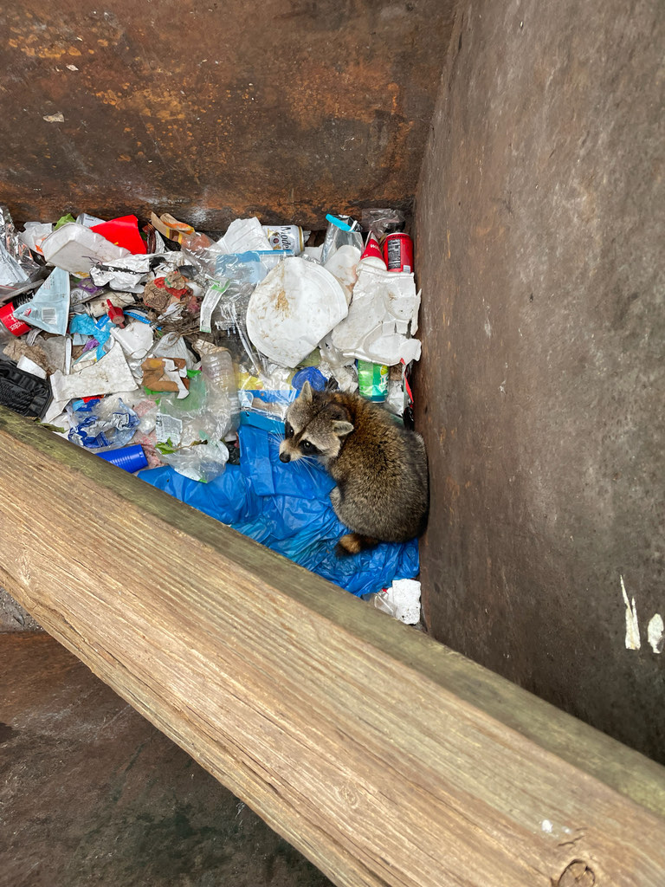

- The name lotor is Latin for 'washer,' and raccoons do manipulate food and objects in water — but the behavior is not simply about cleanliness. Research on raccoon sensory fibers shows that wetting the skin of the forepaws produces large increases in nerve responsiveness and decreases in detection threshold, making touch more informative. The animal is gathering information, not scrubbing its dinner.
- Raccoon forepaws are exceptionally sensitive and dexterous. A large portion of the brain's somatosensory cortex is dedicated to processing signals from the forepaws, which the animal uses to feel its way through mud, water, leaf litter, and tree cavities where vision is limited.
- Raccoons are skilled problem-solvers. Research has shown that they can learn solutions to mechanical tasks and retain those solutions across years — a useful ability for an animal that regularly encounters latches, cooler lids, and other obstacles.
- Florida raccoons are year-round residents statewide, active in every month. Unlike their northern relatives, they do not den up for winter or enter any period of torpor — the mild climate keeps food available and raccoons moving throughout the year.
A stocky, medium-sized mammal with a broad head and somewhat hunched posture when walking, caused by hind legs that are noticeably longer than the front legs. Body length 24 to 38 inches including the tail; weight in Florida typically 8 to 20 pounds, though urban animals can run heavier. Males are somewhat larger than females.
The black mask across the eyes — outlined above and below by whitish fur — is the raccoon's signature mark and visible at a glance in almost any light. The rest of the face is lighter gray to buff, with small rounded ears edged in white.
Overall grizzled gray-brown above, paler on the underside. The bushy tail carries four to seven alternating dark and pale rings and is about 9 to 12 inches long. Florida raccoons often appear slightly darker and less heavily furred than northern animals.
Five dexterous toes on each forefoot, with a spread that looks remarkably hand-like in tracks. The print of a hind foot resembles a small human footprint; a front print is smaller and rounder. Both show distinct toe pads and are a reliable field sign in soft mud.
Raccoons produce a wide range of vocalizations depending on context. The most commonly heard are a low churring or purring between a mother and her kits, soft chittering among foraging animals, and a sharp growl or hiss when threatened. Alarm calls can carry considerable distance. Young kits produce high-pitched mewing and crying when distressed — a sound often mistaken for a bird or cat in the dark. A cornered or injured adult may scream. For most encounters at a distance, raccoons are quiet; it is the rustle of movement and the splash near water that usually gives them away first.
The black facial mask and banded tail together make the raccoon essentially unmistakable — no other Florida mammal combines both. At night, eyeshine is typically yellow-green to amber; the exact hue shifts with the angle of the light source. Tracks in mud near water are distinctive: look for paired front-and-hind prints where the smaller front foot is offset from the larger hind. Listen after dark for rustling and the occasional churring or chattering call.
A true omnivore with one of the broadest diets of any Florida mammal. In and near water — including coastal mangroves, tidal marshes, and the intertidal habitats of Palma Sola Bay — raccoons forage for fiddler crabs, blue crabs, oysters, clams, mussels, frogs, and small fish. On land they eat acorns, wild fruits, berries, insects, bird eggs, small rodents, and carrion. Florida-specific plant foods noted in the literature include sea grapes, beautyberry, cabbage palm fruit, saw palmetto berries, and persimmons. Near people, raccoons exploit pet food, unsecured garbage, and compost readily.
Check the edges of any water feature in the park, especially where the bank is soft enough to show tracks. Raccoons favor the transition between dense cover and open ground, and actively forage along mangrove edges, tidal flats, and the brackish shoreline habitats bordering Palma Sola Bay — areas where crabs and other invertebrates are accessible. At night, eyeshine from a flashlight or headlamp is the most reliable detection method. During the day, look up into large hollow trees or check root cavities near water where animals may be resting. Footprints in mud near ponds or tidal margins are a good sign even when no animal is visible.
Year-round in Manatee County, with no seasonal absence. Most active from late afternoon through the first few hours after dark; a second burst of activity often occurs just before dawn. Families with kits are most visible from late spring through summer as young animals begin ranging with their mother. Mild winter nights in Florida keep raccoons active throughout the year.
Observe from a comfortable distance — raccoons are active and interesting animals to watch. Do not feed them; fed raccoons quickly lose their wariness of people, begin approaching visitors, and often have to be removed or euthanized as a result. FWC advises against feeding wildlife because it produces unnatural behavior, crowds animals together, increases disease transmission, and creates conflicts with people and pets. Florida regulations prohibit placing food in a manner that attracts raccoons. If a raccoon approaches you closely or appears disoriented, move away calmly and report it to park staff.
- © Randall Carter (CC-BY-NC), via iNaturalist